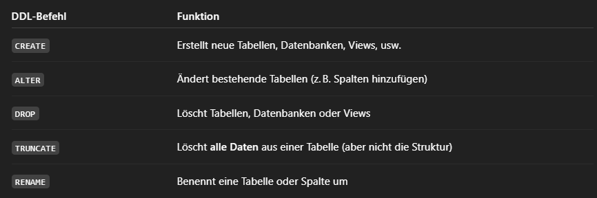
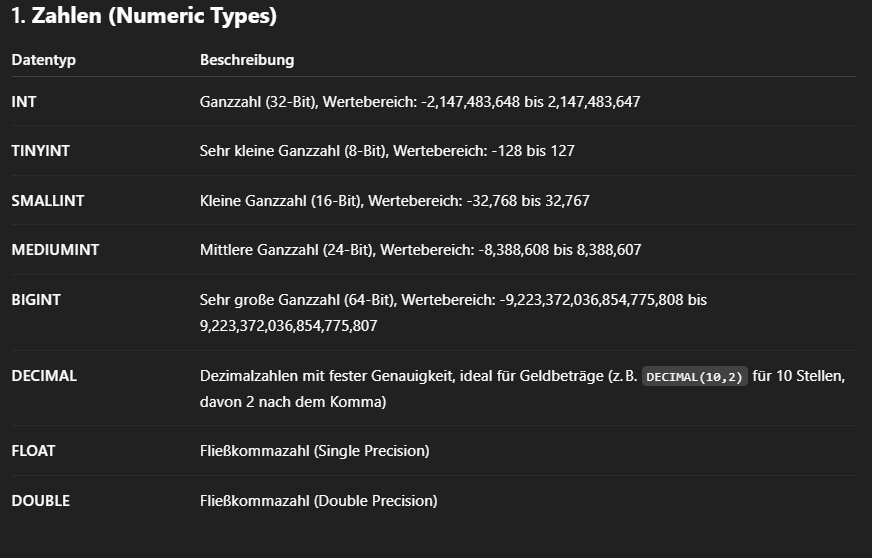
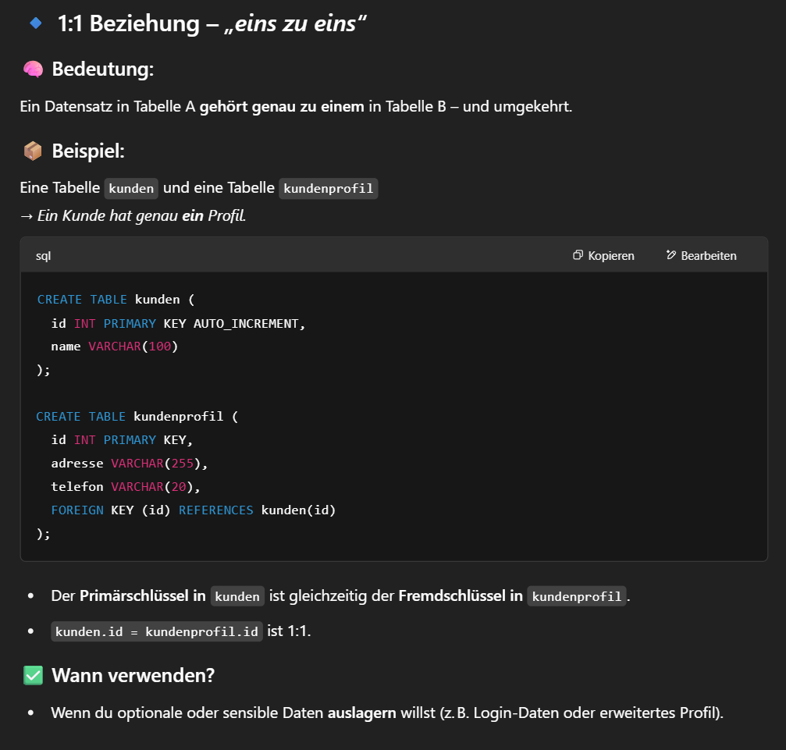
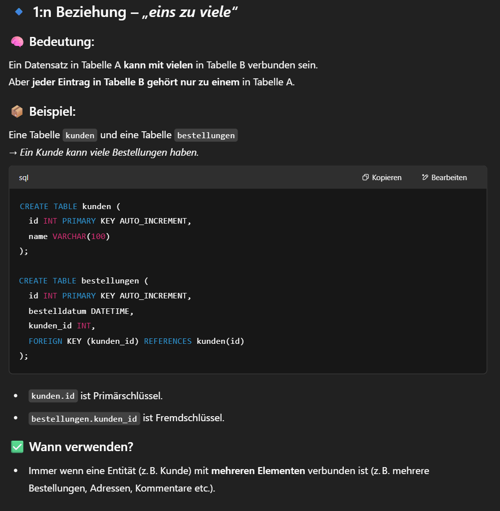
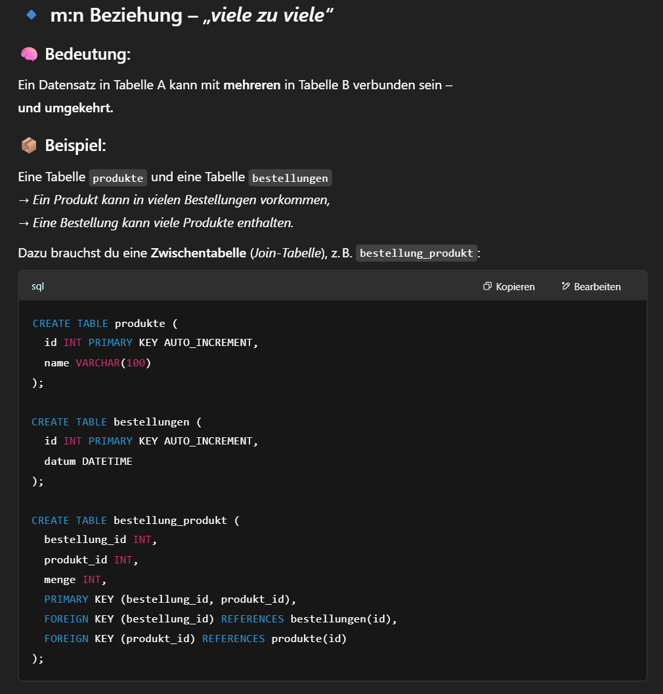

SQL
INSERT INTO-Statement
Das INSERT INTO-Statement in SQL wird verwendet, um neue Datensätze (Zeilen) in eine Tabelle einzufügen.

UPDATE-Statement
Das UPDATE-Statement in SQL wird verwendet, um bestehende Daten in einer Tabelle zu ändern – also: Datensätze aktualisieren.
Hinweis: Sei vorsichtig beim Aktualisieren von Datensätzen in einer Tabelle! Achte auf die WHERE-Klausel im UPDATE-Statement. Die WHERE-Klausel gibt an, welche Datensätze aktualisiert werden sollen. Wenn du die WHERE-Klausel weglässt, werden alle Datensätze in der Tabelle aktualisiert!
DELETE-Statement
Das DELETE-Statement wird in SQL verwendet, um Datensätze aus einer Tabelle zu löschen – also: Zeilen vollständig entfernen.

BEGINT und ROLLBACK
BEGIN und ROLLBACK gehören zur Transaktionssteuerung in SQL – damit kannst du mehrere SQL-Befehle zusammenfassen und bei Bedarf zurückrollen, also „rückgängig machen“.
Was ist eine Transaktion? Eine Transaktion ist eine Gruppe von SQL-Befehlen, die als eine Einheit ausgeführt wird – entweder alle erfolgreich oder gar keiner.


Data defintiion Language (DDL)
Data Definition Language (DDL) ist ein Teil von SQL, mit dem du die Struktur einer Datenbank definierst – also Tabellen anlegen, ändern oder löschen.
Table
Eine Tabelle ist das zentrale Element in einer Datenbank – sie speichert Daten in Zeilen und Spalten, ganz ähnlich wie eine Excel-Tabelle. In SQL-basierenden Datenbanken ist jede Tabelle eine Sammlung von strukturierten Datensätzen, also: Daten mit festgelegten Spaltennamen und Datentypen.

Columns
Eine Spalte in einer Tabelle ist eine vertikale Anordnung von Daten und stellt eine bestimmte Art von Information für alle Datensätze in dieser Tabelle dar. Jede Spalte hat einen Namen, der den Datentyp und die Art der gespeicherten Information angibt, wie zum Beispiel vorname, email oder geburtsdatum.
Wenn du neue Daten hinzufügst oder änderst, geschieht dies immer in den Spalten:
- Eine Spalte speichert eine Art von Information (z. B. alle Vornamen oder alle E-Mails).
- Eine Zeile (Record) repräsentiert einen Datenpunkt (z. B. ein Kunde).
🧠 Merksatz:
Eine Spalte ist wie eine „Kategorie“ für deine Daten, während die Zeile einen „Eintrag“ in dieser Kategorie darstellt.
In MySQL gibt es eine Vielzahl von Datentypen, die du verwenden kannst, um Daten in Tabellen zu speichern. Sie lassen sich in drei Hauptkategorien unterteilen:
- Zahlen (Numeric Types)
- Zeichenketten (String Types)
- Datum und Zeit (Date and Time Types)
Zusätzlich gibt es noch andere spezielle Datentypen für BLOBs (Binärdaten), JSON und boolesche Werte.


Häufig genutzte Datentypen
- INT (Ganzzahlen)
- Verwendung: Wird für IDs, Zähler und Numerische Werte ohne Dezimalstellen verwendet.
- Größe: INT ist in der Regel ausreichend für viele Anwendungen, da es einen Wertebereich von -2.147.483.648 bis 2.147.483.647 abdeckt.
- VARCHAR(n) (Variable Länge von Zeichenketten)
- Verwendung: Wird für Texte, Namen, E-Mails oder Adressen verwendet, bei denen die Länge variiert.
- Vorteil: Speichert nur die tatsächlich benötigte Länge, was Speicherplatz spart.
- DATETIME (Datum und Zeit)
- Verwendung: Wird für Zeitstempel verwendet, z. B. für Erstellungsdaten, Bearbeitungsdaten oder Veranstaltungszeiten.
- Format: YYYY-MM-DD HH:MM:SS (Jahr-Monat-Tag Stunden:Minuten:Sekunden)
- DECIMAL (Dezimalzahlen mit fester Genauigkeit)
- Verwendung: Wird für Geldbeträge, Finanzdaten oder Werte mit fester Dezimalstellenanzahl verwendet.
- Vorteil: Im Gegensatz zu Fließkommazahlen (FLOAT oder DOUBLE) wird bei DECIMAL die Genauigkeit nicht durch die interne Repräsentation beeinflusst, was insbesondere für Finanzberechnungen wichtig ist.
Primary Key
Ein Primärschlüssel (engl. Primary Key) ist ein eindeutiges Merkmal einer Zeile in einer Tabelle. Er stellt sicher, dass jede Zeile eindeutig identifiziert werden kann – sozusagen die „Perso-Nummer“ deines Datenbankeintrags.
🔐 Eigenschaften eines Primärschlüssels
- Eindeutig: Jeder Wert darf nur einmal vorkommen.
- Nicht NULL: Es muss immer ein Wert vorhanden sein
- Nur eine pro Tabelle: Es kann nur einen Primärschlüssel pro Tabelle geben (dieser kann aber aus mehreren Spalten bestehen → kombinierter Schlüssel).
Warum ist das wichtig?
- Ermöglicht schnelles Finden von Daten
- Verhindert Dubletten
- Wird bei Beziehungen zwischen Tabellen als Referenz (Fremdschlüssel) genutzt
🧠 Merksatz:
Der Primärschlüssel ist das "Erkennungsmerkmal" jeder Zeile – wie ein Ausweis: eindeutig, einmalig, Pflicht.
Beziehungen zwischen Tabellen
Eine Beziehung zwischen Tabellen in MySQL (und allgemein in relationalen Datenbanken) wird über Fremdschlüssel (FOREIGN KEY) hergestellt. Damit sagst du:
Diese Spalte in Tabelle A zeigt auf eine Zeile in Tabelle B.
Das ist sehr nützlich für verbundene Daten, z. B. Kunden und Bestellungen: Jede Bestellung gehört zu einem Kunden.
1:1 Beziehung


Fremdschlüssel/Foreign Key
Ein Fremdschlüssel (engl. Foreign Key) ist ein Feld in einer Tabelle, das auf den Primärschlüssel einer anderen Tabelle verweist. Er ist das Bindeglied, das Beziehungen zwischen Tabellen in einer relationalen Datenbank herstellt.
🔑 Was macht ein Fremdschlüssel?
Ein Fremdschlüssel sagt im Grunde:
„Dieser Wert hier gehört zu einem Datensatz in einer anderen Tabelle.“
Dadurch kannst du zusammenhängende Daten strukturieren – z. B. Bestellungen, die zu Kunden gehören.
📌 Was bedeutet es, einen Fremdschlüssel zu haben?
Wenn eine Spalte ein Fremdschlüssel ist, bedeutet das:
- Der Wert muss in der verknüpften Tabelle existieren → z. B. Du kannst keine Bestellung für einen Kunden machen, der nicht existiert.
- Die Datenbank kann bei JOINs korrekt Daten verbinden
- Du kannst mit Fremdschlüsseln löschen oder ändern mit Regeln steuern:
🧠 Merksatz:
Ein Fremdschlüssel zeigt mit dem Finger auf eine Zeile in einer anderen Tabelle. Er verknüpft Daten logisch und sichert ihre Gültigkeit.
Normalization
Normalisierung (engl. Normalization) in SQL ist ein Konzept der Datenbankmodellierung, bei dem du Tabellen so aufbaust, dass sie effizient, logisch und fehlerfrei strukturiert sind. Ziel ist es, Redundanz (doppelte Daten) zu vermeiden und die Datenintegrität zu sichern.